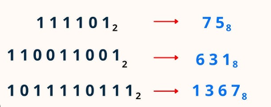
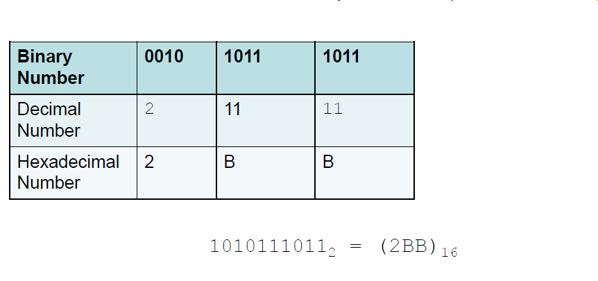
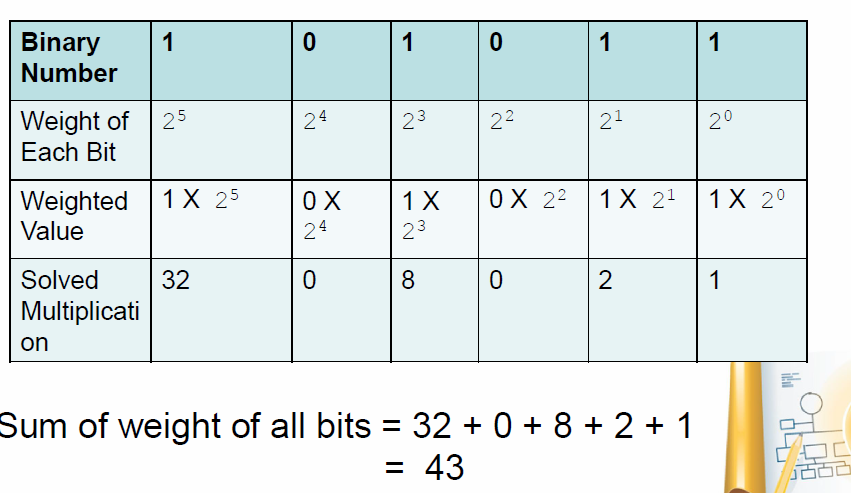
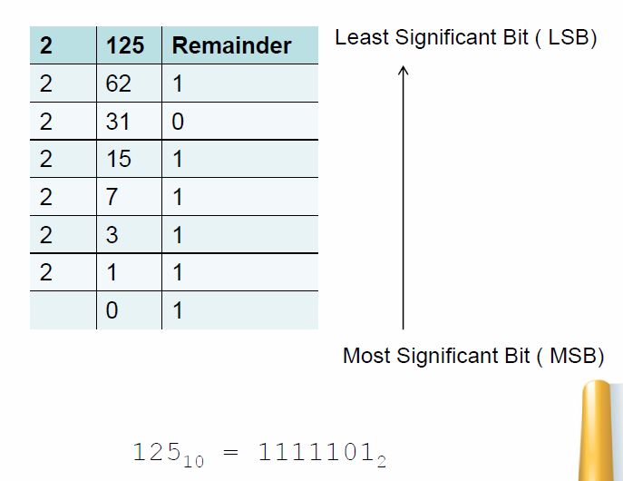
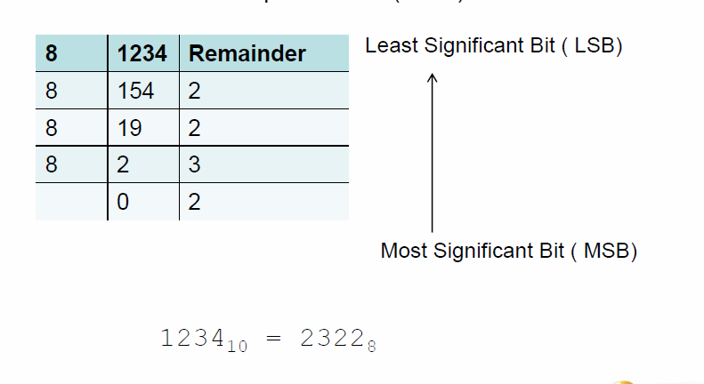
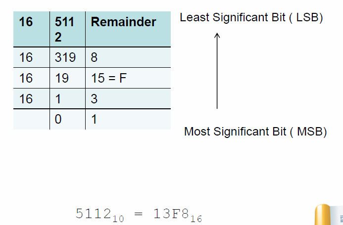

A number system is a mathematical method of representing numbers using symbols. Different number systems are used in computing and mathematics.
| Number System | Base | Digits Used | Example |
|---|---|---|---|
| Binary | 2 | 0,1 | 1010₂ |
| Octal | 8 | 0-7 | 12₈ |
| Decimal | 10 | 0-9 | 45₁₀ |
| Hexadecimal | 16 | 0-9, A-F | 1A₁₆ |
Binary is a base-2 number system used in digital computing. It consists of only two digits: 0 and 1.
Example: 1010₂ in binary represents 10₁₀ in decimal.
Octal is a base-8 number system. It uses digits from 0 to 7 and is often used in computing as a shorthand for binary.
Example: 17₈ in octal represents 15₁₀ in decimal.
Decimal is the standard base-10 number system used in everyday life. It consists of digits from 0 to 9.
Example: 125₁₀ remains the same in decimal.
Hexadecimal is a base-16 system, using digits 0-9 and letters A-F to represent values 10-15.
Example: 1A₁₆ in hexadecimal represents 26₁₀ in decimal.
To convert a **binary number** into **octal**, group the binary digits in sets of three (starting from the right), then convert each group into its octal equivalent.
Example:
Binary: **101011** → (grouped as **101 011**) → Octal: **53₈**
Group binary digits in sets of four (starting from the right), then convert each group into hexadecimal.
Example:
Binary: **11011011** → (grouped as **1101 1011**) → Hexadecimal: **DB₁₆**
Multiply each binary digit by **2^position** and sum the values.
Example:
Binary: **1011₂** = (1×2³) + (0×2²) + (1×2¹) + (1×2⁰) = **11₁₀**
Divide the decimal number by 2 repeatedly, noting the remainder at each step.
Example:
Decimal **25₁₀** → Divide by 2 → Remainders **(1,0,0,1,1)** → Binary **11001₂**
Divide the decimal number by 8 repeatedly, noting the remainders.
Example:
Decimal **98₁₀** → Divide by 8 → Remainders **(2,2,1)** → Octal **122₈**
Divide the decimal number by 16, using hexadecimal symbols for values 10-15.
Example:
Decimal **254₁₀** → Divide by 16 → Remainders **(14,15)** → Hexadecimal **FE₁₆**
Understanding number systems is crucial in: